Try the new view →
9618-2021-mj-31-q07
May/June 2021 · Paper 31 · Question 7 · 8 marks
7(a) One mark for working, (all three columns P, Q and R) 3
One mark for each correct column Y, Z
A B C P Q R Y Z
0 0 0 0 0 0 0 0
0 0 1 0 0 0 1 0
0 1 0 1 0 0 1 0
0 1 1 1 0 1 0 1
1 0 0 1 0 0 1 0
1 0 1 1 0 1 0 1
1 1 0 0 1 0 0 1
1 1 1 0 1 0 1 1
7(b) Full adder 1
7(c) One mark for each point 4
_ _ _ _ _ _
Y = A B C + A B C + A B C + A B C
Purpose: Sum bit
_ _ _
Z = A B C + A B C + A B C + A B C
Purpose: Carry output
Question Answer Marks
Official mark scheme pages: 8 · source PDF URL
9618-2021-mj-32-q07
May/June 2021 · Paper 32 · Question 7 · 8 marks
7(a) One mark for working, (all three columns P, Q and R) 3
One mark for each correct column Y, Z
A B C P Q R Y Z
0 0 0 0 0 0 0 0
0 0 1 0 0 0 1 0
0 1 0 1 0 0 1 0
0 1 1 1 0 1 0 1
1 0 0 1 0 0 1 0
1 0 1 1 0 1 0 1
1 1 0 0 1 0 0 1
1 1 1 0 1 0 1 1
7(b) Full adder 1
7(c) One mark for each point 4
_ _ _ _ _ _
Y = A B C + A B C + A B C + A B C
Purpose: Sum bit
_ _ _
Z = A B C + A B C + A B C + A B C
Purpose: Carry output
Question Answer Marks
Official mark scheme pages: 8 · source PDF URL
9618-2021-mj-33-q07
May/June 2021 · Paper 33 · Question 7 · 8 marks
7(a) One mark for working, (all three columns P, Q and R) 3
One mark for each correct column Y, Z
A B C P Q R Y Z
0 0 0 0 0 0 0 0
0 0 1 0 0 0 1 0
0 1 0 1 0 0 1 0
0 1 1 1 0 1 0 1
1 0 0 1 0 0 1 0
1 0 1 1 0 1 0 1
1 1 0 0 1 0 0 1
1 1 1 0 1 0 1 1
7(b) Full adder 1
7(c) One mark for each point 4
_ _ _ _ _ _
Y = A B C + A B C + A B C + A B C
Purpose: Sum bit
_ _ _
Z = A B C + A B C + A B C + A B C
Purpose: Carry output
Question Answer Marks
Official mark scheme pages: 8 · source PDF URL
9618-2021-on-31-q07
Oct/Nov 2021 · Paper 31 · Question 7 · 10 marks
7(a) One mark per two correct products (Max 3) 3
_ _ _ _ _ _
(Z =) A B C D + A B C D + A B C D + A B C D +
_
A B C D + A B C D
7(b)(i) One mark for every two correct rows or columns (Max 2) 2
AB
00 01 11 10
00 0 0 1 0
01 0 0 1 1
CD
11 0 0 1 1
10 0 0 1 0
7(b)(ii) One mark for correct loop (Max 2) 2
AB
00 01 11 10
0 1
00 0 0
01 0 0 1 1
CD
11 0 0 1 1
01 0 0 1 0
7(b)(iii) One mark per correct marking point (Max 2) 2
• A B // A D
• + A D // + A B
(Z =) A B + A D // A D + A B
7(b)(iv) (Z =) A (B + D) // A (D + B) 1
© UCLES 2021 Page 7 of 10
Official mark scheme pages: 7 · source PDF URL
9618-2021-on-32-q07
Oct/Nov 2021 · Paper 32 · Question 7 · 10 marks
7(a) One mark per two correct products (Max 3) 3
_ _ _ _ _ _
(Z =) A B C D + A B C D + A B C D + A B C D +
_
A B C D + A B C D
7(b)(i) One mark for every two correct rows or columns (Max 2) 2
AB
00 01 11 10
00 0 0 1 0
01 0 0 1 1
CD
11 0 0 1 1
10 0 0 1 0
7(b)(ii) One mark for correct loop (Max 2) 2
AB
00 01 11 10
0 1
00 0 0
01 0 0 1 1
CD
11 0 0 1 1
01 0 0 1 0
7(b)(iii) One mark per correct marking point (Max 2) 2
• A B // A D
• + A D // + A B
(Z =) A B + A D // A D + A B
7(b)(iv) (Z =) A (B + D) // A (D + B) 1
© UCLES 2021 Page 7 of 10
Official mark scheme pages: 7 · source PDF URL
9618-2022-mj-31-q04
May/June 2022 · Paper 31 · Question 4 · 6 marks
4(a) RISC max 2 any two from: 4
Uses simple instructions
Uses fixed length instructions
Instructions only require one clock cycle
Uses many registers
Makes use of pipelining
Hardwired CU
CISC max 2 any two from:
Uses many instruction formats
Uses variable length instructions
Makes use of different addressing modes
Uses few registers
Has a large instruction set
Requires complex circuits
Frequently uses cache
Instructions (converted to sub-instructions that) may require many clock cycles
Programmable CU
4(b) One mark for each difference max 2 from: 2
RISC has fewer instructions // CISC has more instructions
RISC has many registers // CISC has few registers
RISC’s instructions are simpler // CISC’s instructions are more complex
RISC has a few instruction formats / CISC has many instruction formats
RISC usually uses single-cycle instructions// CISC uses multi-cycle instructions
RISC uses fixed-length instructions // CISC uses variable-length instructions
RISC has better pipelineability // CISC has poorer pipelineability
RISC requires less complex circuits// CISC requires more complex circuits
RISC has fewer addressing modes // CISC has more addressing modes
RISC makes more use of RAM// CISC makes more use of cache/less use of RAM
RISC has a hard-wired control unit // CISC has a programmable control unit
RISC only uses load and store instructions to address memory // CISC has many types of instructions to address
memory
© UCLES 2022 Page 6 of 11
Official mark scheme pages: 6 · source PDF URL
9618-2022-mj-31-q06
May/June 2022 · Paper 31 · Question 6 · 6 marks
6 Two marks each benefit description max 4 6
New system can be tried on different virtual hardware (1)
without need to purchase the hardware (1)
Easier to recover if software emulating the new computer causes system crash (1) as VM provides protection to other
software (1)
Emulate programs for the new computer system that are not compatible with the host computer / operating system (1) by
using the guest operating system on the old computer (1)
More than one new computer system can be emulated (1) this allows multiple operating systems to coexist on a single
computer(1)
Two marks each limitation description max 2 from:
Virtual machines may not be able to emulate the new hardware (1) because this hardware may have been developed since
the virtual machine was developed (1)
Using virtual machine means execution of extra code // A virtual machine might not be as efficient // resources e.g. memory
or processor time are shared (1) processing time increased // performance degrades (1)
Use of a virtual machine increases the maintenance overheads (1) because both host system and the virtual machine must
be maintained (1)
© UCLES 2022 Page 8 of 11
Official mark scheme pages: 8 · source PDF URL
9618-2022-mj-31-q09
May/June 2022 · Paper 31 · Question 9 · 10 marks
9(a) LDM #500: Immediate 500 3
LDD 500: Direct 100
LDI 500: Indirect 20
9(b) 7
Instruction
Label Opcode Operand
LDM #20
STO Twenty
LDI Y
ADD Twenty
STO Z
Twenty: #20
Y:
Z:
One mark for LDM #20 seen
One mark for storing 20 at any address
One mark for labelling that address e.g. Twenty away from the program code
One mark for labelling addresses away from the program code as Y and Z
One mark for correct use of LDI Y
One mark for correct use of STO Z
One mark for correct use of ADD with labelled address
© UCLES 2022 Page 11 of 11
Official mark scheme pages: 11 · source PDF URL
9618-2022-mj-32-q05
May/June 2022 · Paper 32 · Question 5 · 6 marks
5 SIMD (1) many/array processors execute the same instruction using different data sets (1) 6
MISD (1) many processors (using different instructions) use the same data set (1)
MIMD (1) many processors (using different instructions) using different data sets (1)
Question Answer Marks
Official mark scheme pages: 7 · source PDF URL
9618-2022-mj-32-q06
May/June 2022 · Paper 32 · Question 6 · 5 marks
6(a) 1 mark per correct output column 2
INPUT OUTPUT
A B E F
0 0 0 0
0 1 1 0
1 0 1 0
1 1 0 1
6(b)(i) Half adder 1
6(b)(ii) Purpose of E: Sum 2
Purpose of F: Carry
© UCLES 2022 Page 7 of 9
Official mark scheme pages: 7 · source PDF URL
9618-2022-mj-33-q04
May/June 2022 · Paper 33 · Question 4 · 6 marks
4(a) RISC max 2 any two from: 4
Uses simple instructions
Uses fixed length instructions
Instructions only require one clock cycle
Uses many registers
Makes use of pipelining
Hardwired CU
CISC max 2 any two from:
Uses many instruction formats
Uses variable length instructions
Makes use of different addressing modes
Uses few registers
Has a large instruction set
Requires complex circuits
Frequently uses cache
Instructions (converted to sub-instructions that) may require many clock cycles
Programmable CU
4(b) One mark for each difference max 2 from: 2
RISC has fewer instructions // CISC has more instructions
RISC has many registers // CISC has few registers
RISC’s instructions are simpler // CISC’s instructions are more complex
RISC has a few instruction formats / CISC has many instruction formats
RISC usually uses single-cycle instructions// CISC uses multi-cycle instructions
RISC uses fixed-length instructions // CISC uses variable-length instructions
RISC has better pipelineability // CISC has poorer pipelineability
RISC requires less complex circuits// CISC requires more complex circuits
RISC has fewer addressing modes // CISC has more addressing modes
RISC makes more use of RAM// CISC makes more use of cache/less use of RAM
RISC has a hard-wired control unit // CISC has a programmable control unit
RISC only uses load and store instructions to address memory // CISC has many types of instructions to address
memory
© UCLES 2022 Page 6 of 11
Official mark scheme pages: 6 · source PDF URL
9618-2022-mj-33-q06
May/June 2022 · Paper 33 · Question 6 · 6 marks
6 Two marks each benefit description max 4 6
New system can be tried on different virtual hardware (1)
without need to purchase the hardware (1)
Easier to recover if software emulating the new computer causes system crash (1) as VM provides protection to other
software (1)
Emulate programs for the new computer system that are not compatible with the host computer / operating system (1) by
using the guest operating system on the old computer (1)
More than one new computer system can be emulated (1) this allows multiple operating systems to coexist on a single
computer(1)
Two marks each limitation description max 2 from:
Virtual machines may not be able to emulate the new hardware (1) because this hardware may have been developed since
the virtual machine was developed (1)
Using virtual machine means execution of extra code // A virtual machine might not be as efficient // resources e.g. memory
or processor time are shared (1) processing time increased // performance degrades (1)
Use of a virtual machine increases the maintenance overheads (1) because both host system and the virtual machine must
be maintained (1)
© UCLES 2022 Page 8 of 11
Official mark scheme pages: 8 · source PDF URL
9618-2022-mj-33-q09
May/June 2022 · Paper 33 · Question 9 · 10 marks
9(a) LDM #500: Immediate 500 3
LDD 500: Direct 100
LDI 500: Indirect 20
9(b) 7
Instruction
Label Opcode Operand
LDM #20
STO Twenty
LDI Y
ADD Twenty
STO Z
Twenty: #20
Y:
Z:
One mark for LDM #20 seen
One mark for storing 20 at any address
One mark for labelling that address e.g. Twenty away from the program code
One mark for labelling addresses away from the program code as Y and Z
One mark for correct use of LDI Y
One mark for correct use of STO Z
One mark for correct use of ADD with labelled address
© UCLES 2022 Page 11 of 11
Official mark scheme pages: 11 · source PDF URL
9618-2022-on-31-q07
Oct/Nov 2022 · Paper 31 · Question 7 · 7 marks
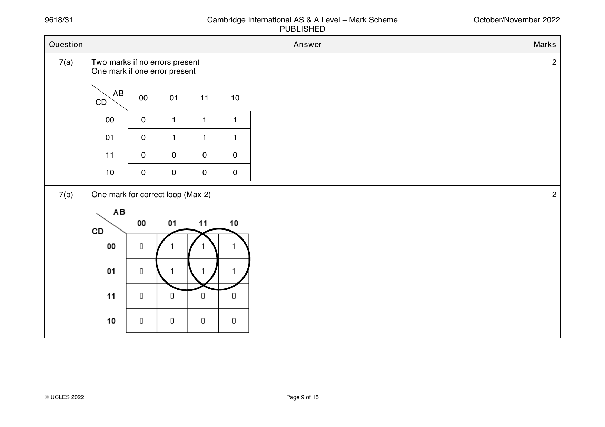
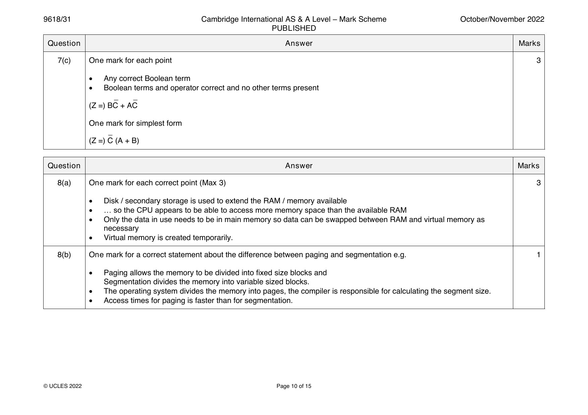
7(a) Two marks if no errors present 2
One mark if one error present
AB
00 01 11 10
CD
00 0 1 1 1
01 0 1 1 1
11 0 0 0 0
10 0 0 0 0
7(b) One mark for correct loop (Max 2) 2
© UCLES 2022 Page 9 of 15
7(c) One mark for each point 3
• Any correct Boolean term
• Boolean terms and operator correct and no other terms present
_ _
(Z =) BC + AC
One mark for simplest form
_
(Z =) C (A + B)
Question Answer Marks
Official mark scheme pages: 9, 10 · source PDF URL
9618-2022-on-31-q10
Oct/Nov 2022 · Paper 31 · Question 10 · 6 marks


10(a) Two marks for all five rows correct 2
One mark for four rows correct
Statement RISC CISC
uses a smaller instruction set ✓
uses single-cycle instructions and limited addressing modes ✓
uses fewer general-purpose registers ✓
uses both hardwired and micro coded control unit ✓
uses a system where cache is split between data and
✓
instructions
© UCLES 2022 Page 11 of 15
10(b) One mark for each correct point (Max 4) 4
• Instructions are divided into subtasks / 5 stages
• … Instruction fetch / IF, Instruction decode / ID, operand fetch / OF, opcode/instruction execute IE, result store / write
back result / WB
• Each subtask is completed during one clock cycle
• No two instructions can execute their same stage at the same clock cycle
• The second instruction begins in the second clock cycle, while the first instruction has moved on to its second subtask.
• The third instruction begins in the third clock cycle while the first and second instructions move on to their second and
third subtasks, respectively, etc.
Question Answer Marks
Official mark scheme pages: 11, 12 · source PDF URL
9618-2022-on-32-q05
Oct/Nov 2022 · Paper 32 · Question 5 · 6 marks

5 One mark for each description (Max 2) 6
• The emulation of a computer system / hardware and/or software
• … using a host computer system.
• Using guest operating system(s) for emulation.
One mark for each correct benefit (Max 2)
• Multiple guest operating systems / VMs can be used on the same computer.
• Different instruction set architectures can be emulated on a single computer.
• A virtual machine can crash without affecting the host machine.
• There are security benefits // Trying a piece of suspicious software and if it is / has a virus, it will only infect the virtual
machine.
• Cost savings due to not needing to purchase extra hardware.
• Can run legacy applications that are currently incompatible.
One mark for each correct drawback (Max 2)
• A virtual machine is less efficient / has poorer performance than real machines because of extra load on the host
computer
• Performance of the guest system cannot be adequately measured.
• A virtual machine may be affected by any weaknesses of the host machine.
• Costly and/or complex to maintain / implement / manage.
• Cannot emulate some hardware.
Question Answer Marks
Official mark scheme pages: 8 · source PDF URL
9618-2022-on-32-q08
Oct/Nov 2022 · Paper 32 · Question 8 · 8 marks
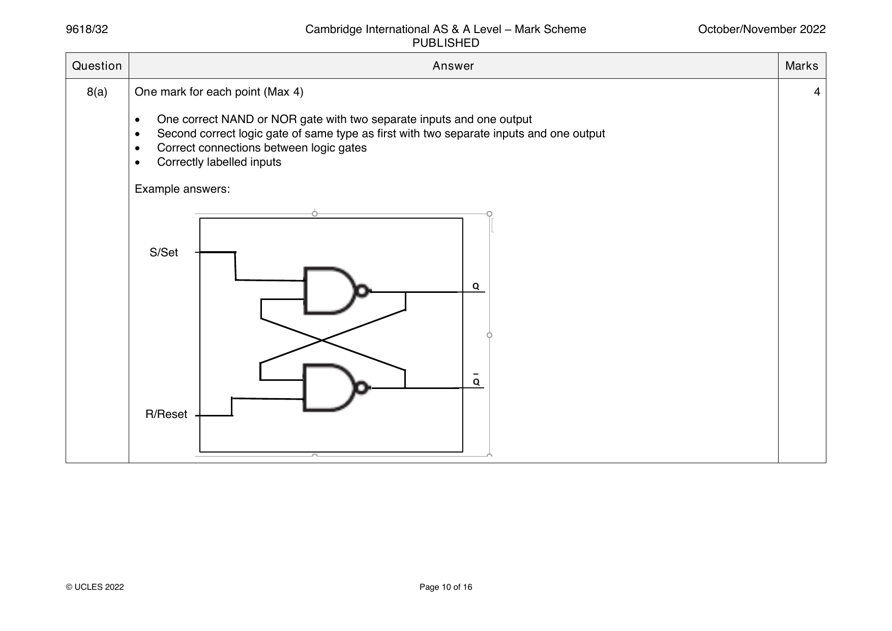
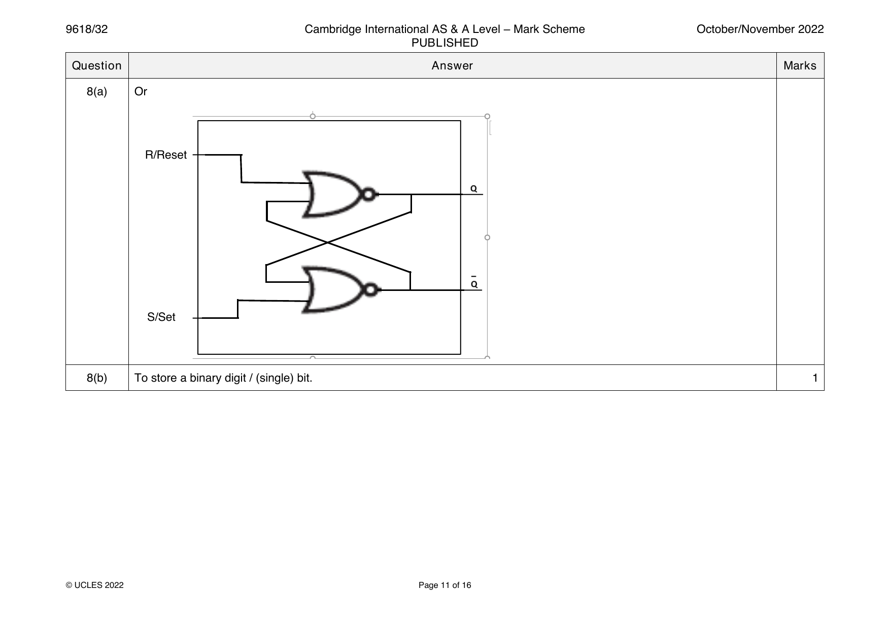
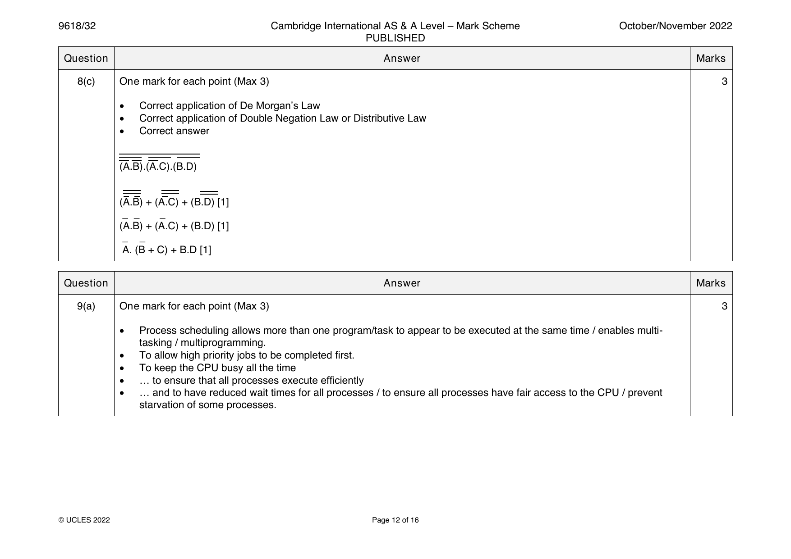
8(a) One mark for each point (Max 4) 4
• One correct NAND or NOR gate with two separate inputs and one output
• Second correct logic gate of same type as first with two separate inputs and one output
• Correct connections between logic gates
• Correctly labelled inputs
Example answers:
S/Set
R/Reset
© UCLES 2022 Page 10 of 16
8(a) Or
R/Reset
S/Set
8(b) To store a binary digit / (single) bit. 1
© UCLES 2022 Page 11 of 16
8(c) One mark for each point (Max 3) 3
• Correct application of De Morgan’s Law
• Correct application of Double Negation Law or Distributive Law
• Correct answer
(A.B).(A.C).(B.D)
(A.B) + (A.C) + (B.D) [1]
_ _ _
(A.B) + (A.C) + (B.D) [1]
_ _
A. (B + C) + B.D [1]
Question Answer Marks
Official mark scheme pages: 10, 11, 12 · source PDF URL
9618-2022-on-33-q07
Oct/Nov 2022 · Paper 33 · Question 7 · 7 marks
7(a) Two marks if no errors present 2
One mark if one error present
AB
00 01 11 10
CD
00 0 1 1 1
01 0 1 1 1
11 0 0 0 0
10 0 0 0 0
7(b) One mark for correct loop (Max 2) 2
© UCLES 2022 Page 9 of 15
7(c) One mark for each point 3
• Any correct Boolean term
• Boolean terms and operator correct and no other terms present
_ _
(Z =) BC + AC
One mark for simplest form
_
(Z =) C (A + B)
Question Answer Marks
Official mark scheme pages: 9, 10 · source PDF URL
9618-2022-on-33-q10
Oct/Nov 2022 · Paper 33 · Question 10 · 6 marks


10(a) Two marks for all five rows correct 2
One mark for four rows correct
Statement RISC CISC
uses a smaller instruction set ✓
uses single-cycle instructions and limited addressing modes ✓
uses fewer general-purpose registers ✓
uses both hardwired and micro coded control unit ✓
uses a system where cache is split between data and
✓
instructions
© UCLES 2022 Page 11 of 15
10(b) One mark for each correct point (Max 4) 4
• Instructions are divided into subtasks / 5 stages
• … Instruction fetch / IF, Instruction decode / ID, operand fetch / OF, opcode/instruction execute IE, result store / write
back result / WB
• Each subtask is completed during one clock cycle
• No two instructions can execute their same stage at the same clock cycle
• The second instruction begins in the second clock cycle, while the first instruction has moved on to its second subtask.
• The third instruction begins in the third clock cycle while the first and second instructions move on to their second and
third subtasks, respectively, etc.
Question Answer Marks
Official mark scheme pages: 11, 12 · source PDF URL
9618-2023-mj-31-q07
May/June 2023 · Paper 31 · Question 7 · 7 marks
7(a) Two marks if no errors present 2
One mark if one error present
7(b) One mark for each correct loop (Max 2) 2
© UCLES 2023 Page 6 of 10
7(c) One mark for each mark point (Max 2) 2
Any correct Boolean term
Boolean terms and operator correct and no other terms present
(Z =) AC + BC
7(d) One mark for simplest form (Max 1) 1
(Z =) C (A + B)
Question Answer Marks
Official mark scheme pages: 6, 7 · source PDF URL
9618-2023-mj-31-q08
May/June 2023 · Paper 31 · Question 8 · 3 marks
8 One mark per mark point (Max 3) 3
MP1 A large number of computer processors / separate computers
connected together
MP2 … simultaneously performing a set of coordinated computations //
collaborative processing
MP3 network infrastructure
MP4 communicate using a message interface / by sending messages.
Question Answer Marks
Official mark scheme pages: 7 · source PDF URL
9618-2023-mj-32-q08
May/June 2023 · Paper 32 · Question 8 · 6 marks
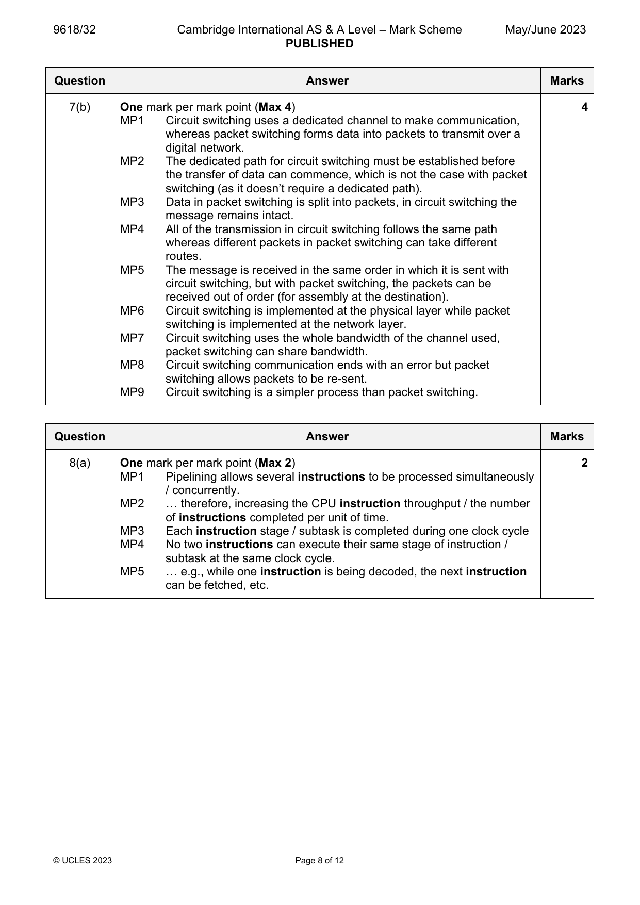
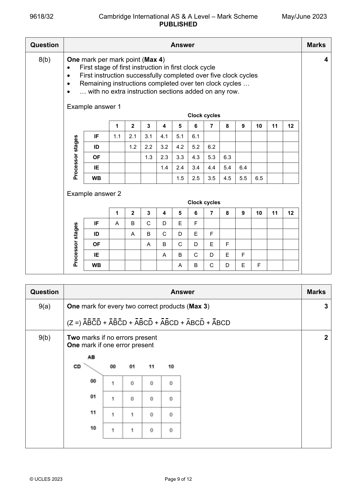
8(a) One mark per mark point (Max 2) 2
MP1 Pipelining allows several instructions to be processed simultaneously
/ concurrently.
MP2 … therefore, increasing the CPU instruction throughput / the number
of instructions completed per unit of time.
MP3 Each instruction stage / subtask is completed during one clock cycle
MP4 No two instructions can execute their same stage of instruction /
subtask at the same clock cycle.
MP5 … e.g., while one instruction is being decoded, the next instruction
can be fetched, etc.
© UCLES 2023 Page 8 of 12
8(b) One mark per mark point (Max 4)
First stage of first instruction in first clock cycle
First instruction successfully completed over five clock cycles
Remaining instructions completed over ten clock cycles …
… with no extra instruction sections added on any row.
Example answer 1
Clock cycles
© UCLES 2023 Page 9 of 12
segats
rossecorP
1 2 3 4 5 6 7 8 9 10 11 12
IF 1.1 2.1 3.1 4.1 5.1 6.1
ID 1.2 2.2 3.2 4.2 5.2 6.2
OF 1.3 2.3 3.3 4.3 5.3 6.3
IE 1.4 2.4 3.4 4.4 5.4 6.4
WB 1.5 2.5 3.5 4.5 5.5 6.5
Example answer 2
Clock cycles
segats
rossecorP
4
1 2 3 4 5 6 7 8 9 10 11 12
IF A B C D E F
ID A B C D E F
OF A B C D E F
IE A B C D E F
WB A B C D E F
Question Answer Marks
Official mark scheme pages: 8, 9 · source PDF URL
9618-2023-mj-32-q09
May/June 2023 · Paper 32 · Question 9 · 10 marks
9(a) One mark for every two correct products (Max 3) 3
(Z =) ABCD + ABCD + ABCD + ABCD + ABCD + ABCD
9(b) Two marks if no errors present 2
One mark if one error present
9(c) One mark for each correct loop (Max 2) 2
9(d) One mark for each mark point (Max 2) 2
Any correct Boolean term
Boolean terms and operator correct and no other terms present
(Z =) AB + AC
9(e) One mark for simplest form (Max 1) 1
(Z =) A (B + C)
Question Answer Marks
Official mark scheme pages: 9, 10 · source PDF URL
9618-2023-mj-33-q07
May/June 2023 · Paper 33 · Question 7 · 7 marks
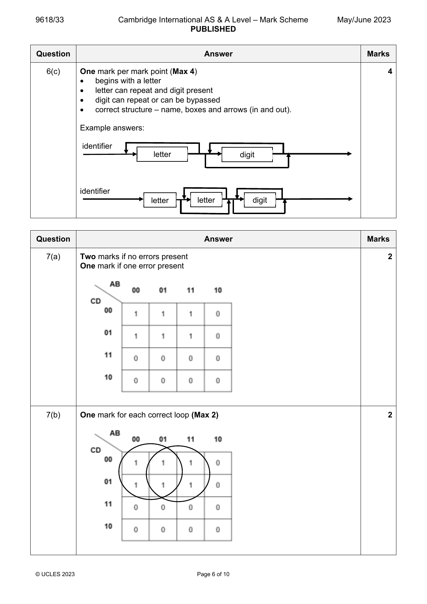

7(a) Two marks if no errors present 2
One mark if one error present
7(b) One mark for each correct loop (Max 2) 2
© UCLES 2023 Page 6 of 10
7(c) One mark for each mark point (Max 2) 2
Any correct Boolean term
Boolean terms and operator correct and no other terms present
(Z =) AC + BC
7(d) One mark for simplest form (Max 1) 1
(Z =) C (A + B)
Question Answer Marks
Official mark scheme pages: 6, 7 · source PDF URL
9618-2023-mj-33-q08
May/June 2023 · Paper 33 · Question 8 · 3 marks
8 One mark per mark point (Max 3) 3
MP1 A large number of computer processors / separate computers
connected together
MP2 … simultaneously performing a set of coordinated computations //
collaborative processing
MP3 network infrastructure
MP4 communicate using a message interface / by sending messages.
Question Answer Marks
Official mark scheme pages: 7 · source PDF URL
9618-2023-on-31-q05
Oct/Nov 2023 · Paper 31 · Question 5 · 4 marks
5 One mark per mark point – SISD (Max 2) 4
MP1 Single Instruction, Single Data (architecture). // Data is taken from a
single source and a single instruction is performed on the data.
MP2 Contains one processor, a control unit and a memory unit.
MP3 …that executes instructions sequentially.
One mark per mark point – MIMD (Max 2)
MP4 Multiple Instruction, Multiple Data (architecture). // At any time, any
processor can execute different instructions on different sets of data.
MP5 Contains many processors
MP6 …that operate asynchronously / independently.
© UCLES 2023 Page 4 of 9
Official mark scheme pages: 4 · source PDF URL
9618-2023-on-31-q06
Oct/Nov 2023 · Paper 31 · Question 6 · 6 marks
6(a) One mark for every shaded block of rows for column Z correct (Max 3) 3
A B C D Z
0 0 0 0 1
0 0 0 1 0
0 0 1 0 1
0 0 1 1 0
0 1 0 0 1
0 1 0 1 0
0 1 1 0 1
0 1 1 1 0
1 0 0 0 1
1 0 0 1 0
1 0 1 0 1
1 0 1 1 0
1 1 0 0 1
1 1 0 1 0
1 1 1 0 0
1 1 1 1 0
6(b) One mark for correct working from points (Max 2), for example: 3
(Y =) A.B.C.D + A.B.C.D + A.B.C.D + A.B.C.D
(Y =) A.D.(B.C + B.C + B.C + B.C)
(Y =) A.D.(B.(C + C) + B.(C + C))
(Y =) A.D.(B.(1) + B.(1))
(Y =) A.D.(B + B)
(Y =) A.D.(1)
One mark for correct answer
(Y =) A.D
© UCLES 2023 Page 5 of 9
Official mark scheme pages: 5 · source PDF URL
9618-2023-on-32-q07
Oct/Nov 2023 · Paper 32 · Question 7 · 5 marks
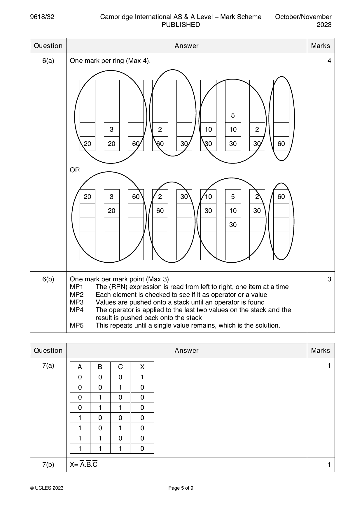

7(a) A B C X 1
0 0 0 1
0 0 1 0
0 1 0 0
0 1 1 0
1 0 0 0
1 0 1 0
1 1 0 0
1 1 1 0
7(b) X= A.B.C 1
© UCLES 2023 Page 5 of 9
7(c) (Max 2) for correct working from points shown 3
(T =) X.Y.Z + X.Y.Z + X
Distributive law
(T=) X.Z.(Y + Y) + X
Complement law
(T=) X.Z.(1) + X
Identity law
(T=) X.Z + X
Redundancy law (to get final answer)
One mark for correct answer
(T=) X + Z
Question Answer Marks
Official mark scheme pages: 5, 6 · source PDF URL
9618-2023-on-32-q10
Oct/Nov 2023 · Paper 32 · Question 10 · 4 marks
10 One mark per mark point – SIMD (Max 2) 4
MP1 Single Instruction, Multiple Data (architecture) // Performs the same
operation on multiple different data streams simultaneously.
MP2 The instructions can be performed sequentially, taking advantage of
pipelining.
MP3 Parallel computers with multiple processors.
One mark per mark point – MISD (Max 2)
MP4 Multiple Instruction, Single Data (architecture) // Performs different
operations on the same data stream.
MP5 Each processor works on the same data stream independently.
MP6 Parallel computers with multiple processors.
Question Answer Marks
Official mark scheme pages: 8 · source PDF URL
9618-2023-on-33-q05
Oct/Nov 2023 · Paper 33 · Question 5 · 4 marks
5 One mark per mark point – SISD (Max 2) 4
MP1 Single Instruction, Single Data (architecture). // Data is taken from a
single source and a single instruction is performed on the data.
MP2 Contains one processor, a control unit and a memory unit.
MP3 …that executes instructions sequentially.
One mark per mark point – MIMD (Max 2)
MP4 Multiple Instruction, Multiple Data (architecture). // At any time, any
processor can execute different instructions on different sets of data.
MP5 Contains many processors
MP6 …that operate asynchronously / independently.
© UCLES 2023 Page 4 of 9
Official mark scheme pages: 4 · source PDF URL
9618-2023-on-33-q06
Oct/Nov 2023 · Paper 33 · Question 6 · 6 marks
6(a) One mark for every shaded block of rows for column Z correct (Max 3) 3
A B C D Z
0 0 0 0 1
0 0 0 1 0
0 0 1 0 1
0 0 1 1 0
0 1 0 0 1
0 1 0 1 0
0 1 1 0 1
0 1 1 1 0
1 0 0 0 1
1 0 0 1 0
1 0 1 0 1
1 0 1 1 0
1 1 0 0 1
1 1 0 1 0
1 1 1 0 0
1 1 1 1 0
6(b) One mark for correct working from points (Max 2), for example: 3
(Y =) A.B.C.D + A.B.C.D + A.B.C.D + A.B.C.D
(Y =) A.D.(B.C + B.C + B.C + B.C)
(Y =) A.D.(B.(C + C) + B.(C + C))
(Y =) A.D.(B.(1) + B.(1))
(Y =) A.D.(B + B)
(Y =) A.D.(1)
One mark for correct answer
(Y =) A.D
© UCLES 2023 Page 5 of 9
Official mark scheme pages: 5 · source PDF URL
9618-2024-mj-31-q06
May/June 2024 · Paper 31 · Question 6 · 10 marks
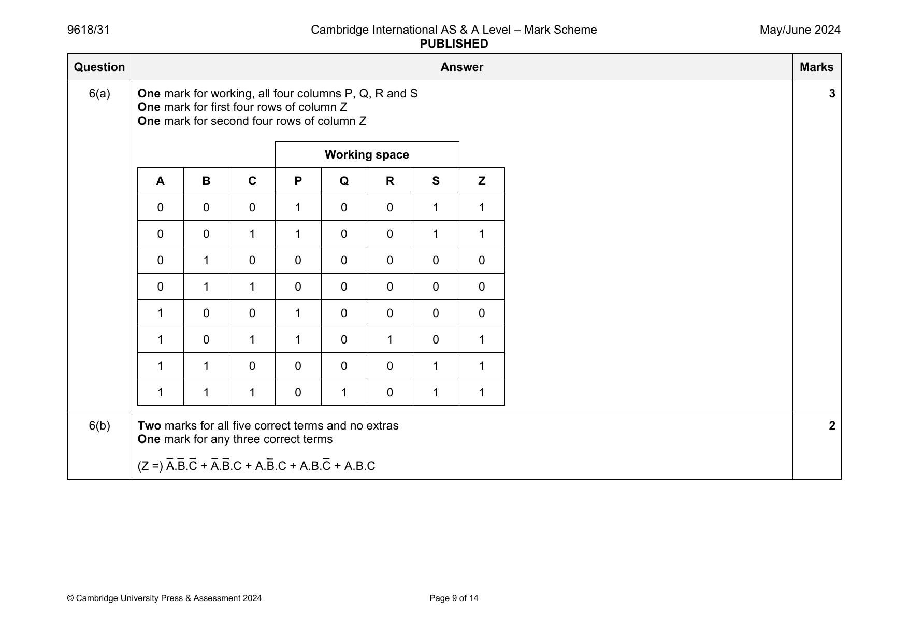

6(a) One mark for working, all four columns P, Q, R and S 3
One mark for first four rows of column Z
One mark for second four rows of column Z
Working space
A B C P Q R S Z
0 0 0 1 0 0 1 1
0 0 1 1 0 0 1 1
0 1 0 0 0 0 0 0
0 1 1 0 0 0 0 0
1 0 0 1 0 0 0 0
1 0 1 1 0 1 0 1
1 1 0 0 0 0 1 1
1 1 1 0 1 0 1 1
6(b) Two marks for all five correct terms and no extras 2
One mark for any three correct terms
(Z =) A.B.C + A.B.C + A.B.C + A.B.C + A.B.C
© Cambridge University Press & Assessment 2024 Page 9 of 14
6(c)(i) Two marks if all correct 2
One mark if one error present
BC
00 01 11 10
A
0 1 1 0 0
1 1 1 1 1
6(c)(ii) One mark for each correct loop (Max 2) 2
BC
00 01 11 10
A
0 1 1 0 0
1 1 1 1 1
6(c)(iii) A + B 1
Question Answer Marks
Official mark scheme pages: 9, 10 · source PDF URL
9618-2024-mj-31-q11
May/June 2024 · Paper 31 · Question 11 · 8 marks
11(a) One mark per mark point (Max 2) 2
MP1 Uses hard-wired code/control units
MP2 Uses relatively few instructions / simple instructions
MP3 Uses relatively few addressing modes
MP4 Makes use of a single-cycle for each instruction
MP5 Makes use of fixed length / fixed format instructions
MP6 Makes use of general-purpose registers
MP7 Pipelining is straightforward to apply
MP8 The design emphasis is on the software
MP9 Processor chips require few transistors.
11(b) One mark per mark point (Max 3) 3
MP1 Once the processor detects an interrupt at the start/end of the fetch-execute cycle
MP2 … the current program is temporarily stopped and the status of each register stored on the stack.
MP3 After the interrupt has been serviced/the Interrupt Service Routine (ISR) has been executed …
MP4 … the registers can be restored to its original status before the interrupt was detected // … the data can be
restored from the stack.
11(c) One mark per mark point (Max 3) 3
MP1 Pipelining adds an additional complexity // there could be a number of instructions still in the pipeline when the
interrupt is received
MP2 All the instructions currently in operation are usually discarded except for the last one/the one at write back
MP3 … the interrupt handler routine is applied to the remaining instruction.
MP4 Once the interrupt has been serviced the processor can restart with the next instruction in the sequence.
© Cambridge University Press & Assessment 2024 Page 14 of 14
Official mark scheme pages: 14 · source PDF URL
9618-2024-mj-32-q06
May/June 2024 · Paper 32 · Question 6 · 10 marks
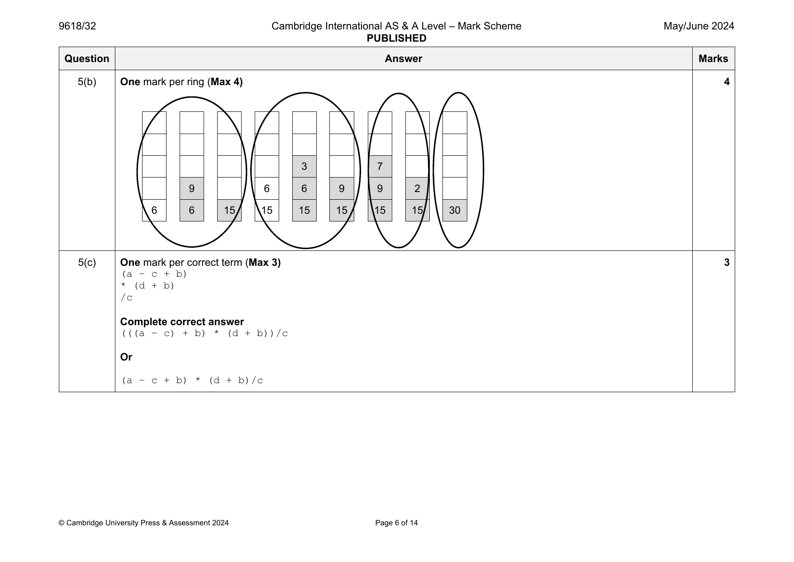
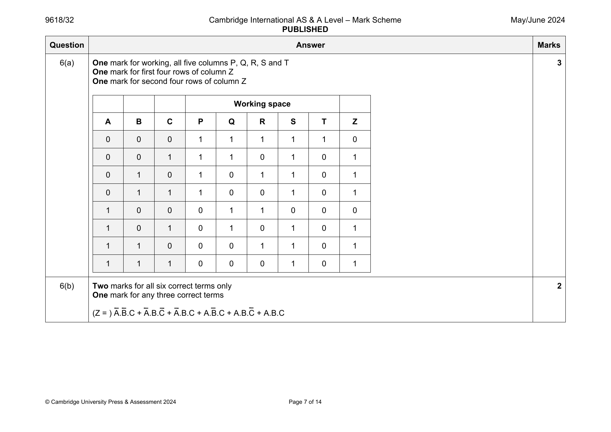

6 6 15 15 15 15 15 15 30
5(c) One mark per correct term (Max 3) 3
(a – c + b)
* (d + b)
/c
Complete correct answer
(((a – c) + b) * (d + b))/c
Or
(a – c + b) * (d + b)/c
© Cambridge University Press & Assessment 2024 Page 6 of 14
6(a) One mark for working, all five columns P, Q, R, S and T 3
One mark for first four rows of column Z
One mark for second four rows of column Z
Working space
A B C P Q R S T Z
0 0 0 1 1 1 1 1 0
0 0 1 1 1 0 1 0 1
0 1 0 1 0 1 1 0 1
0 1 1 1 0 0 1 0 1
1 0 0 0 1 1 0 0 0
1 0 1 0 1 0 1 0 1
1 1 0 0 0 1 1 0 1
1 1 1 0 0 0 1 0 1
6(b) Two marks for all six correct terms only 2
One mark for any three correct terms
(Z = ) A.B.C + A.B.C + A.B.C + A.B.C + A.B.C + A.B.C
© Cambridge University Press & Assessment 2024 Page 7 of 14
6(c)(i) Two marks if all correct 2
One mark if only one error present
BC
00 01 11 10
A
0 1 0 1 1
1 1 0 1 1
6(c)(ii) One mark for each correct loop (Max 2) 2
BC
00 01 11 10
A
0
0 1 1 1
1 1 0 1 1
6(c)(iii) B + C 1
Question Answer Marks
Official mark scheme pages: 6, 7, 8 · source PDF URL
9618-2024-mj-32-q09
May/June 2024 · Paper 32 · Question 9 · 7 marks
9(a) One mark per mark point for up to two benefits (Max 2) 4
MP1 COMPATIBILTY e.g. Applications that aren’t compatible with the host computer can be run on the virtual machine
// It is possible to emulate old software on a new system by running a compatible guest operating system as a
virtual machine // Software can be tried on different OS on the same hardware.
MP2 PROTECTION e.g. The guest operating system has no effect on anything outside the virtual machine other virtual
machines or the host computer//Virtual machines are useful for testing as they will not crash the host computer if
something goes wrong // Easier to recover if software causes a system crash as virtual machine software protects
the host system.
MP3 COST e.g. No need to buy extra computers / hardware as multiple virtual machines can be implemented on the
same hardware.
One mark per mark point for up to two limitations (Max 2)
MP4 PERFORMANCE e.g. The performance of the guest operating system will not be as good on a virtual machine as
it would be on its own compatible machine because of the extra code / using more RAM/memory space // The
performance of the VM is dependent on the capabilities of the host computer // Response times cannot be
accurately measured using a virtual machine.
MP5 COMPLEXITY e.g. Building an in-house virtual machine can be expensive, time consuming and complex to
maintain / set-up.
MP6 HARDWARE/SOFTWARE ISSUES e.g. Some hardware/software can’t be emulated with a virtual machine //
Some of the host machine’s hardware can’t be directly accessed by the virtual machine.
9(b) One mark per mark point – host operating system (Max 2) 3
MP1 The host operating system is the normal operating system for the host computer / machine.
MP2 It has control of all the resources of the host computer / machine. // It can access the physical resources of the
host computer / machine.
MP3 It provides a user interface to operate the virtual machine software.
MP4 It also runs the virtual machine software.
One mark per mark point – guest operating system (Max 2)
MP5 The guest operating system runs within the virtual machine.
MP6 … it controls the virtual hardware/software during the emulation. // It accesses the actual hardware through the
virtual machine and host operating system.
MP7 It provides a virtual user interface for the emulated hardware/software.
MP8 The guest operating system runs under the control of the host operating system.
© Cambridge University Press & Assessment 2024 Page 12 of 14
Official mark scheme pages: 12 · source PDF URL
9618-2024-mj-33-q06
May/June 2024 · Paper 33 · Question 6 · 10 marks
6(a) One mark for working, all four columns P, Q, R and S 3
One mark for first four rows of column Z
One mark for second four rows of column Z
Working space
A B C P Q R S Z
0 0 0 1 0 0 1 1
0 0 1 1 0 0 1 1
0 1 0 0 0 0 0 0
0 1 1 0 0 0 0 0
1 0 0 1 0 0 0 0
1 0 1 1 0 1 0 1
1 1 0 0 0 0 1 1
1 1 1 0 1 0 1 1
6(b) Two marks for all five correct terms and no extras 2
One mark for any three correct terms
(Z =) A.B.C + A.B.C + A.B.C + A.B.C + A.B.C
© Cambridge University Press & Assessment 2024 Page 9 of 14
6(c)(i) Two marks if all correct 2
One mark if one error present
BC
00 01 11 10
A
0 1 1 0 0
1 1 1 1 1
6(c)(ii) One mark for each correct loop (Max 2) 2
BC
00 01 11 10
A
0 1 1 0 0
1 1 1 1 1
6(c)(iii) A + B 1
Question Answer Marks
Official mark scheme pages: 9, 10 · source PDF URL
9618-2024-mj-33-q11
May/June 2024 · Paper 33 · Question 11 · 8 marks
11(a) One mark per mark point (Max 2) 2
MP1 Uses hard-wired code/control units
MP2 Uses relatively few instructions / simple instructions
MP3 Uses relatively few addressing modes
MP4 Makes use of a single-cycle for each instruction
MP5 Makes use of fixed length / fixed format instructions
MP6 Makes use of general-purpose registers
MP7 Pipelining is straightforward to apply
MP8 The design emphasis is on the software
MP9 Processor chips require few transistors.
11(b) One mark per mark point (Max 3) 3
MP1 Once the processor detects an interrupt at the start/end of the fetch-execute cycle
MP2 … the current program is temporarily stopped and the status of each register stored on the stack.
MP3 After the interrupt has been serviced/the Interrupt Service Routine (ISR) has been executed …
MP4 … the registers can be restored to its original status before the interrupt was detected // … the data can be
restored from the stack.
11(c) One mark per mark point (Max 3) 3
MP1 Pipelining adds an additional complexity // there could be a number of instructions still in the pipeline when the
interrupt is received
MP2 All the instructions currently in operation are usually discarded except for the last one/the one at write back
MP3 … the interrupt handler routine is applied to the remaining instruction.
MP4 Once the interrupt has been serviced the processor can restart with the next instruction in the sequence.
© Cambridge University Press & Assessment 2024 Page 14 of 14
Official mark scheme pages: 14 · source PDF URL
9618-2024-on-31-q02
Oct/Nov 2024 · Paper 31 · Question 2 · 4 marks
2 One mark per mark point (Max 4) 4
MP1 low number of instruction formats //low number of instruction sets
MP2 uses single-clock cycle instructions
MP3 uses fixed length instructions
MP4 uses many general-purpose registers
MP5 works well with pipelining
MP6 hard-wired control unit
MP7 makes extensive use of RAM
MP8 uses a low number of addressing modes
MP9 the design emphasis is on the software.
Question Answer Marks
Official mark scheme pages: 5 · source PDF URL
9618-2024-on-31-q07
Oct/Nov 2024 · Paper 31 · Question 7 · 10 marks

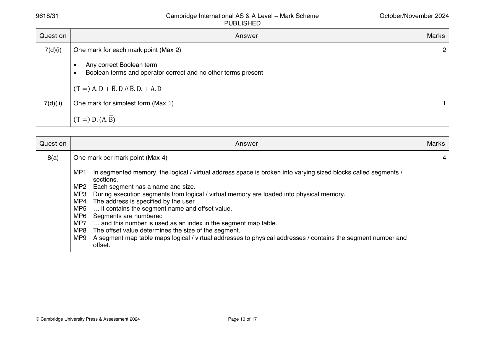
7(a) One mark for every two correct products (Max 3) 3
(T =) A.B.C.D+A.B.C.D+A.B.C.D+ A.B.C.D+A.B.C.D+A.B.C.D
© Cambridge University Press & Assessment 2024 Page 8 of 17
7(b) Two marks if no errors present 2
One mark if one error present
AB
CD 00 01 11 10
00 0 0 0 0
01 1 0 1 1
11 1 0 1 1
10 0 0 0 0
7(c) One mark for each correct loop (Max 2) 2
AB
CD 00 01 11 10
00 0 0 0 0
01 1 0 1 1
11 1 0 1 1
10 0 0 0 0
© Cambridge University Press & Assessment 2024 Page 9 of 17
7(d)(i) One mark for each mark point (Max 2) 2
• Any correct Boolean term
• Boolean terms and operator correct and no other terms present
(T =) A.D+B.D // B.D.+ A.D
7(d)(ii) One mark for simplest form (Max 1) 1
(T =) D.(A.B)
Question Answer Marks
Official mark scheme pages: 8, 9, 10 · source PDF URL
9618-2024-on-32-q06
Oct/Nov 2024 · Paper 32 · Question 6 · 9 marks
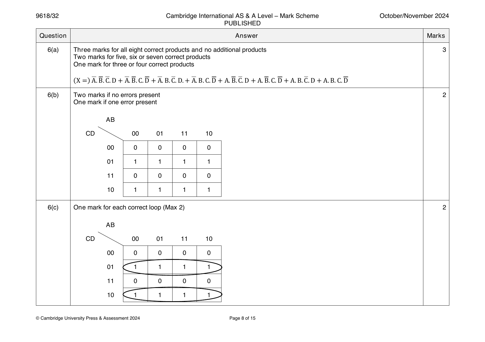
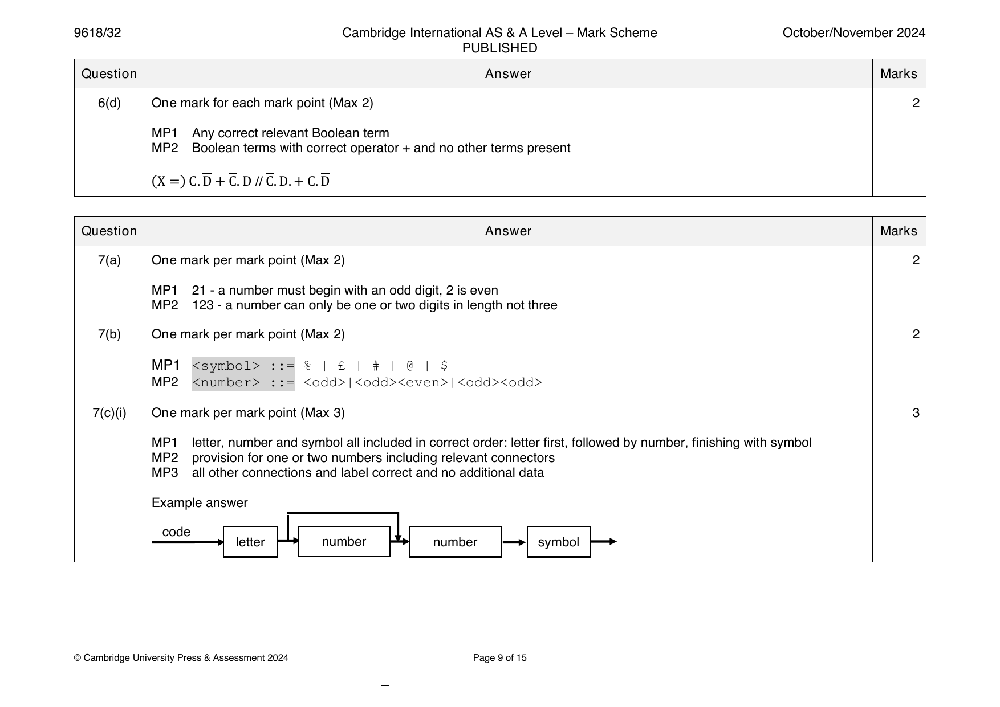
6(a) Three marks for all eight correct products and no additional products 3
Two marks for five, six or seven correct products
One mark for three or four correct products
(X =) A.B.C.D+A.B.C.D+A.B.C.D.+ A.B.C.D+A.B.C.D+A.B.C.D+A.B.C.D+A.B.C.D
6(b) Two marks if no errors present 2
One mark if one error present
AB
CD 00 01 11 10
00 0 0 0 0
01 1 1 1 1
11 0 0 0 0
10 1 1 1 1
6(c) One mark for each correct loop (Max 2) 2
AB
CD 00 01 11 10
00 0 0 0 0
01 1 1 1 1
11 0 0 0 0
10 1 1 1 1
© Cambridge University Press & Assessment 2024 Page 8 of 15
6(d) One mark for each mark point (Max 2) 2
MP1 Any correct relevant Boolean term
MP2 Boolean terms with correct operator + and no other terms present
(X =) C.D+C.D // C.D.+ C.D
Question Answer Marks
Official mark scheme pages: 8, 9 · source PDF URL
9618-2024-on-32-q08
Oct/Nov 2024 · Paper 32 · Question 8 · 4 marks
8 One mark per mark point (Max 4) 4
MP1 many instruction formats possible
MP2 large instruction set
MP3 many addressing modes available
MP4 uses variable length/multi-operation instructions
MP5 multi-clock cycle instructions
MP6 complex decoding of instructions
MP7 uses complex circuits
MP8 makes frequent use of cache memory
MP9 uses programmable control unit // uses micro-programmed control unit // uses hardwired control unit
MP10 hardware needs to be able to handle more complex instructions convert into sub-instructions // Design emphasis is
on the hardware.
© Cambridge University Press & Assessment 2024 Page 10 of 15
Official mark scheme pages: 10 · source PDF URL
9618-2024-on-33-q02
Oct/Nov 2024 · Paper 33 · Question 2 · 4 marks
2 One mark per mark point (Max 4) 4
MP1 low number of instruction formats //low number of instruction sets
MP2 uses single-clock cycle instructions
MP3 uses fixed length instructions
MP4 uses many general-purpose registers
MP5 works well with pipelining
MP6 hard-wired control unit
MP7 makes extensive use of RAM
MP8 uses a low number of addressing modes
MP9 the design emphasis is on the software.
Question Answer Marks
Official mark scheme pages: 5 · source PDF URL
9618-2024-on-33-q07
Oct/Nov 2024 · Paper 33 · Question 7 · 10 marks

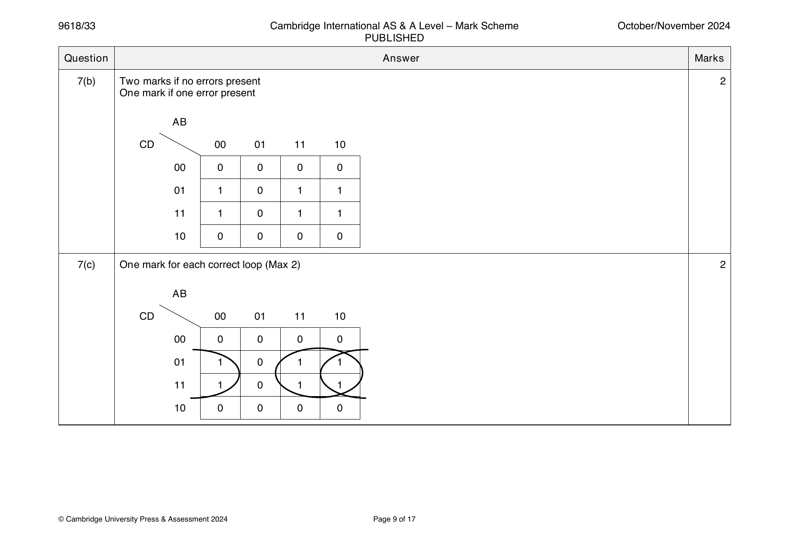
7(a) One mark for every two correct products (Max 3) 3
(T =) A.B.C.D+A.B.C.D+A.B.C.D+ A.B.C.D+A.B.C.D+A.B.C.D
© Cambridge University Press & Assessment 2024 Page 8 of 17
7(b) Two marks if no errors present 2
One mark if one error present
AB
CD 00 01 11 10
00 0 0 0 0
01 1 0 1 1
11 1 0 1 1
10 0 0 0 0
7(c) One mark for each correct loop (Max 2) 2
AB
CD 00 01 11 10
00 0 0 0 0
01 1 0 1 1
11 1 0 1 1
10 0 0 0 0
© Cambridge University Press & Assessment 2024 Page 9 of 17
7(d)(i) One mark for each mark point (Max 2) 2
• Any correct Boolean term
• Boolean terms and operator correct and no other terms present
(T =) A.D+B.D // B.D.+ A.D
7(d)(ii) One mark for simplest form (Max 1) 1
(T =) D.(A.B)
Question Answer Marks
Official mark scheme pages: 8, 9, 10 · source PDF URL
9618-2025-mj-31-q05
May/June 2025 · Paper 31 · Question 5 · 8 marks

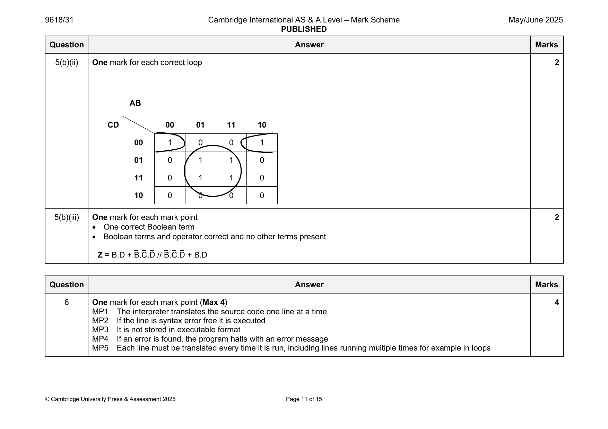
5(a) Two marks for all six correct terms 2
One mark for any three correct terms
Z = A.B.C.D + A.B.C.D + A.B.C.D + A.B.C.D + A.B.C.D + A.B.C.D
5(b)(i) Two marks if no errors present 2
One mark if one error present
AB
CD 00 01 11 10
00 1 0 0 1
01 0 1 1 0
11 0 1 1 0
10 0 0 0 0
© Cambridge University Press & Assessment 2025 Page 10 of 15
5(b)(ii) One mark for each correct loop 2
AB
CD 00 01 11 10
00 1 0 0 1
01 0 1 1 0
11 0 1 1 0
10 0 0 0 0
5(b)(iii) One mark for each mark point 2
• One correct Boolean term
• Boolean terms and operator correct and no other terms present
Z = B.D + B.C.D // B.C.D + B.D
Question Answer Marks
Official mark scheme pages: 10, 11 · source PDF URL
9618-2025-mj-32-q07
May/June 2025 · Paper 32 · Question 7 · 8 marks
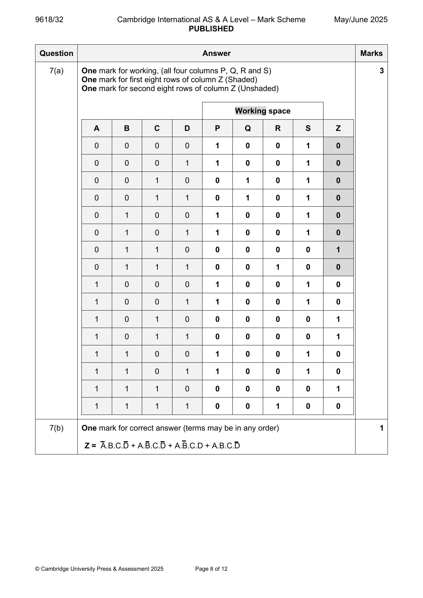
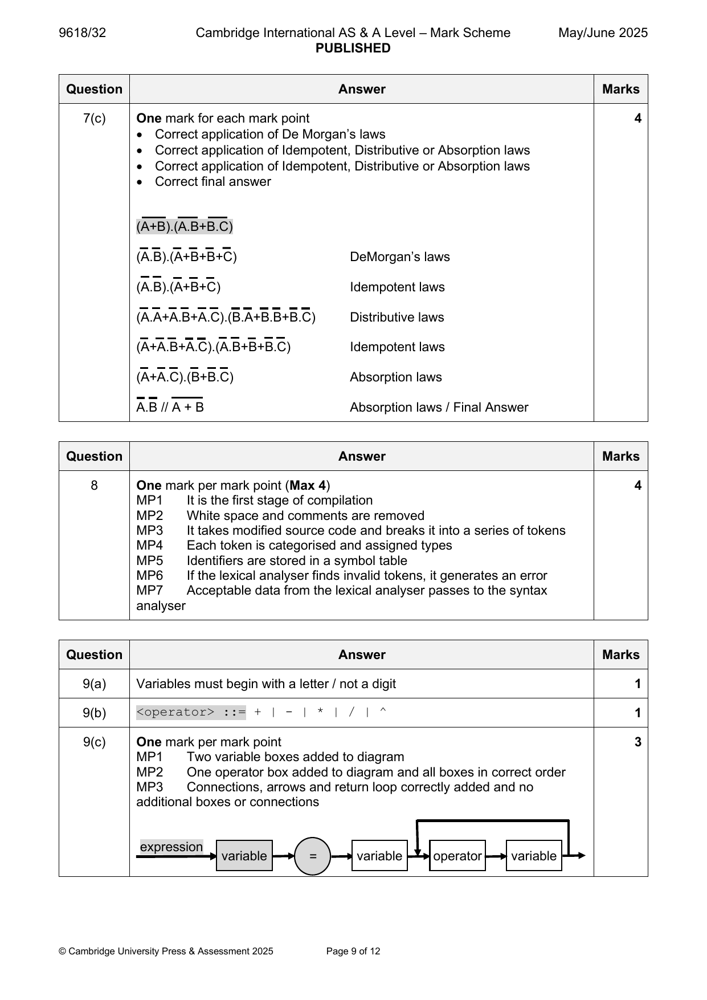
7(a) One mark for working, (all four columns P, Q, R and S) 3
One mark for first eight rows of column Z (Shaded)
One mark for second eight rows of column Z (Unshaded)
Working space
A B C D P Q R S Z
0 0 0 0 1 0 0 1 0
0 0 0 1 1 0 0 1 0
0 0 1 0 0 1 0 1 0
0 0 1 1 0 1 0 1 0
0 1 0 0 1 0 0 1 0
0 1 0 1 1 0 0 1 0
0 1 1 0 0 0 0 0 1
0 1 1 1 0 0 1 0 0
1 0 0 0 1 0 0 1 0
1 0 0 1 1 0 0 1 0
1 0 1 0 0 0 0 0 1
1 0 1 1 0 0 0 0 1
1 1 0 0 1 0 0 1 0
1 1 0 1 1 0 0 1 0
1 1 1 0 0 0 0 0 1
1 1 1 1 0 0 1 0 0
7(b) One mark for correct answer (terms may be in any order) 1
Z = A.B.C.D + A.B.C.D + A.B.C.D + A.B.C.D
© Cambridge University Press & Assessment 2025 Page 8 of 12
7(c) One mark for each mark point 4
• Correct application of De Morgan’s laws
• Correct application of Idempotent, Distributive or Absorption laws
• Correct application of Idempotent, Distributive or Absorption laws
• Correct final answer
(A+B).(A.B+B.C)
(A.B).(A+B+B+C) DeMorgan’s laws
(A.B).(A+B+C) Idempotent laws
(A.A+A.B+A.C).(B.A+B.B+B.C) Distributive laws
(A+A.B+A.C).(A.B+B+B.C) Idempotent laws
(A+A.C).(B+B.C) Absorption laws
A.B // A + B Absorption laws / Final Answer
Question Answer Marks
Official mark scheme pages: 8, 9 · source PDF URL
9618-2025-mj-33-q03
May/June 2025 · Paper 33 · Question 3 · 8 marks

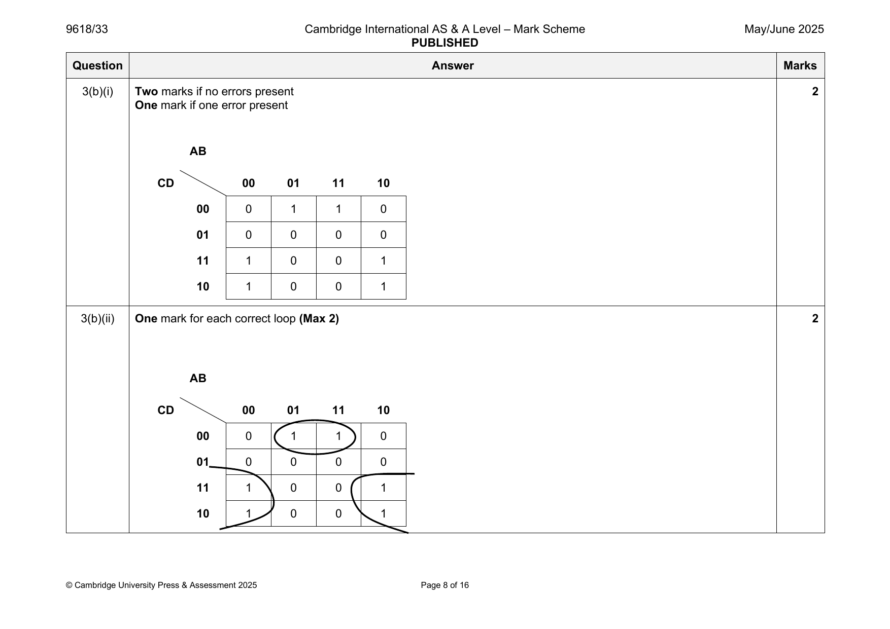
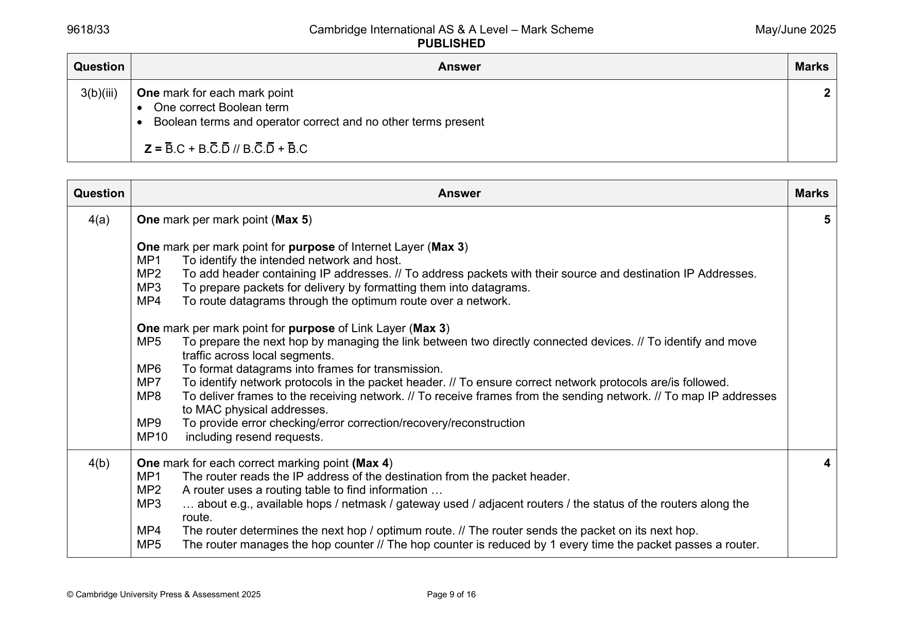
3(a) Two marks for all six correct terms 2
One mark for any four correct terms
Z = A.B.C.D + A.B.C.D + A.B.C.D + A.B.C.D + A.B.C.D + A.B.C.D
© Cambridge University Press & Assessment 2025 Page 7 of 16
3(b)(i) Two marks if no errors present 2
One mark if one error present
AB
CD 00 01 11 10
00 0 1 1 0
01 0 0 0 0
11 1 0 0 1
10 1 0 0 1
3(b)(ii) One mark for each correct loop (Max 2) 2
AB
CD 00 01 11 10
00 0 1 1 0
01 0 0 0 0
11 1 0 0 1
10 1 0 0 1
© Cambridge University Press & Assessment 2025 Page 8 of 16
3(b)(iii) One mark for each mark point 2
• One correct Boolean term
• Boolean terms and operator correct and no other terms present
Z = B.C + B.C.D // B.C.D + B.C
Question Answer Marks
Official mark scheme pages: 7, 8, 9 · source PDF URL
9618-2025-on-31-q06
Oct/Nov 2025 · Paper 31 · Question 6 · 9 marks
6(a) One mark for working, (all four columns P, Q, R and S) 3
One mark for first four rows of column Z
One mark for second four rows of column Z
Working space
A B C P Q R S Z
0 0 0 1 1 1 1 0
0 0 1 1 0 1 0 0
0 1 0 1 1 1 1 1
0 1 1 1 0 1 1 1
1 0 0 0 1 1 1 0
1 0 1 0 0 0 1 0
1 1 0 0 1 1 1 1
1 1 1 0 0 1 1 1
© Cambridge University Press & Assessment 2025 Page 10 of 15
6(b)(i) Two marks if no errors present 2
One mark if only one error present
BC
00 01 11 10
A
0 0 0 1 1
1 0 1 0 1
6(b)(ii) One mark for each correct loop (Max 2) 2
BC
00 01 11 10
A
0 0 0 1 1
1 0 1 0 1
6(b)(iii) One mark for each mark point (Max 2) 2
• One correct Boolean term with a + / OR sign
• All Boolean terms and operators correct and no other terms present
A.B + B.C + A.B.C
Question Answer Marks Guidance
Official mark scheme pages: 10, 11 · source PDF URL
9618-2025-on-31-q11
Oct/Nov 2025 · Paper 31 · Question 11 · 7 marks
11(a) One mark per mark point (Max 6) 6
MP1 LDM #100 seen
MP2 Correct use of STO with labelled address (constant or answer)
MP3 Correct use of LDD 632
MP4 Correct use of SUB with labelled address (constant)
Opcode Operand
LDM #100
STO Constant
LDD 632
SUB Constant
STO Answer
MP5 Storing 100 at a labelled address away from the code
MP6 Labelling both addresses away from the code.
Label Contents
Constant: 100
Answer:
11(b) –55 1
© Cambridge University Press & Assessment 2025 Page 15 of 15
Official mark scheme pages: 15 · source PDF URL
9618-2025-on-32-q06
Oct/Nov 2025 · Paper 32 · Question 6 · 9 marks
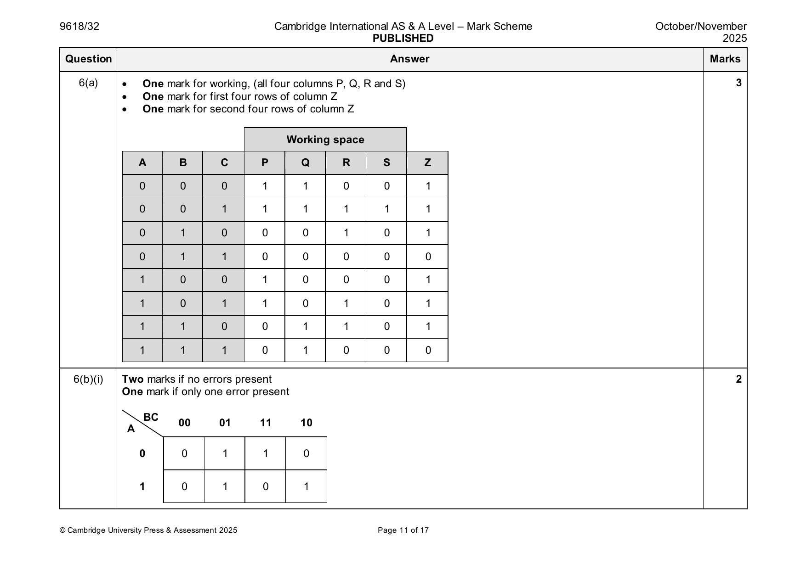
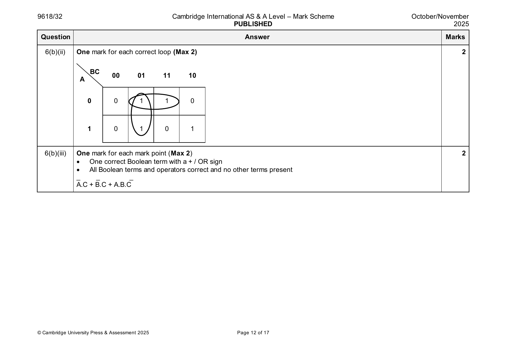
6(a) • One mark for working, (all four columns P, Q, R and S) 3
• One mark for first four rows of column Z
• One mark for second four rows of column Z
Working space
A B C P Q R S Z
0 0 0 1 1 0 0 1
0 0 1 1 1 1 1 1
0 1 0 0 0 1 0 1
0 1 1 0 0 0 0 0
1 0 0 1 0 0 0 1
1 0 1 1 0 1 0 1
1 1 0 0 1 1 0 1
1 1 1 0 1 0 0 0
6(b)(i) Two marks if no errors present 2
One mark if only one error present
BC
00 01 11 10
A
0 0 1 1 0
1 0 1 0 1
© Cambridge University Press & Assessment 2025 Page 11 of 17
6(b)(ii) One mark for each correct loop (Max 2) 2
BC
00 01 11 10
A
0 0 1 1 0
1 0 1 0 1
6(b)(iii) One mark for each mark point (Max 2) 2
• One correct Boolean term with a + / OR sign
• All Boolean terms and operators correct and no other terms present
_ _ _
A.C + B.C + A.B.C
© Cambridge University Press & Assessment 2025 Page 12 of 17
Official mark scheme pages: 11, 12 · source PDF URL
9618-2025-on-32-q11
Oct/Nov 2025 · Paper 32 · Question 11 · 7 marks
11 One mark per mark point (Max 7) 7
MP1 LDD 300 seen
MP2 Correct use of STO seen (at least once)
MP3 Correct use of LDD 420 seen
MP4 Correct use of LDI B
MP5 Correct use of ADD A
Opcode Operand
LDD 300
STO A
LDD 420
STO B
LDI B
ADD A
STO Answer
MP6 Correct labelling of three addresses A:, B: and Answer:
MP7 Correct contents in A: and B:
MP8 Correct value in Answer:
Label Contents
A: 86
B: 150
Answer: 112
© Cambridge University Press & Assessment 2025 Page 16 of 17
Official mark scheme pages: 16 · source PDF URL
9618-2025-on-33-q06
Oct/Nov 2025 · Paper 33 · Question 6 · 8 marks
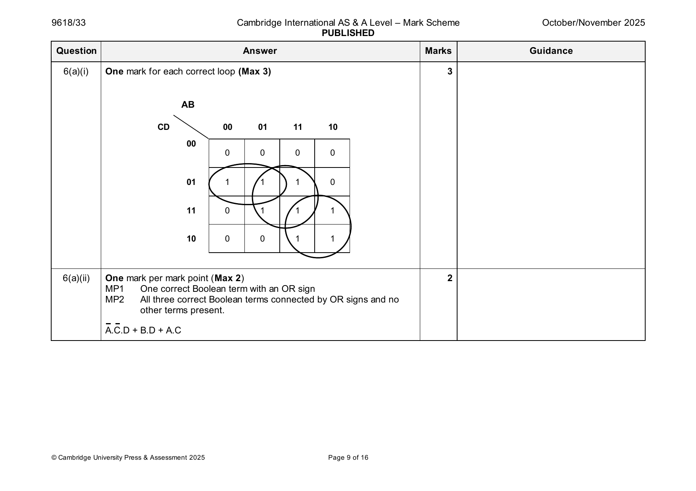
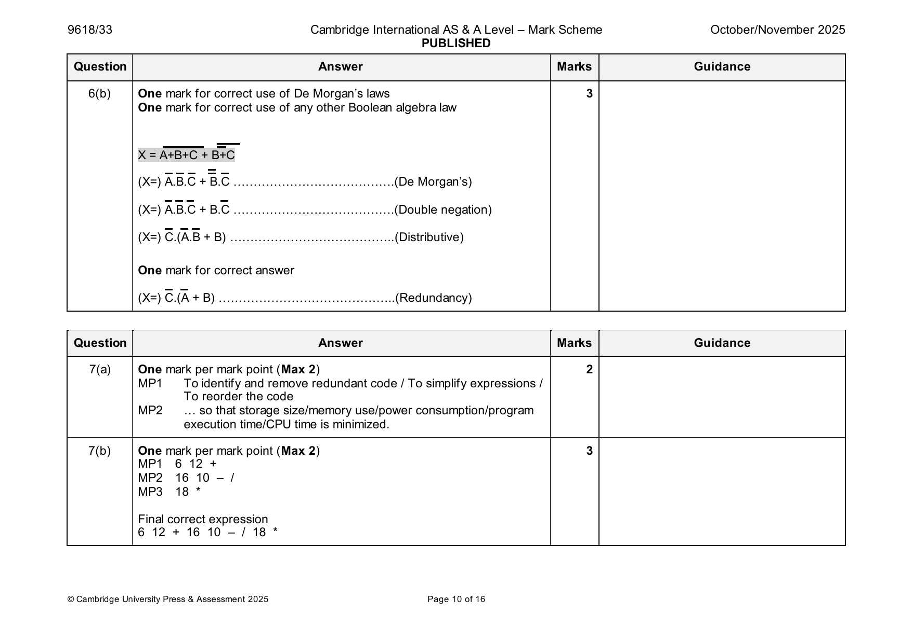
6(a)(i) One mark for each correct loop (Max 3) 3
AB
CD 00 01 11 10
00
0 0 0 0
01 1 1 1 0
11 0 1 1 1
10 0 0 1 1
6(a)(ii) One mark per mark point (Max 2) 2
MP1 One correct Boolean term with an OR sign
MP2 All three correct Boolean terms connected by OR signs and no
other terms present.
A.C.D + B.D + A.C
© Cambridge University Press & Assessment 2025 Page 9 of 16
6(b) One mark for correct use of De Morgan’s laws 3
One mark for correct use of any other Boolean algebra law
X = A+B+C + B+C
(X=) A.B.C + B.C ………………………………….(De Morgan’s)
(X=) A.B.C + B.C ………………………………….(Double negation)
(X=) C.(A.B + B) …………………………………..(Distributive)
One mark for correct answer
(X=) C.(A + B) ……………………………………..(Redundancy)
Question Answer Marks Guidance
Official mark scheme pages: 9, 10 · source PDF URL
9618-2025-on-33-q13
Oct/Nov 2025 · Paper 33 · Question 13 · 7 marks
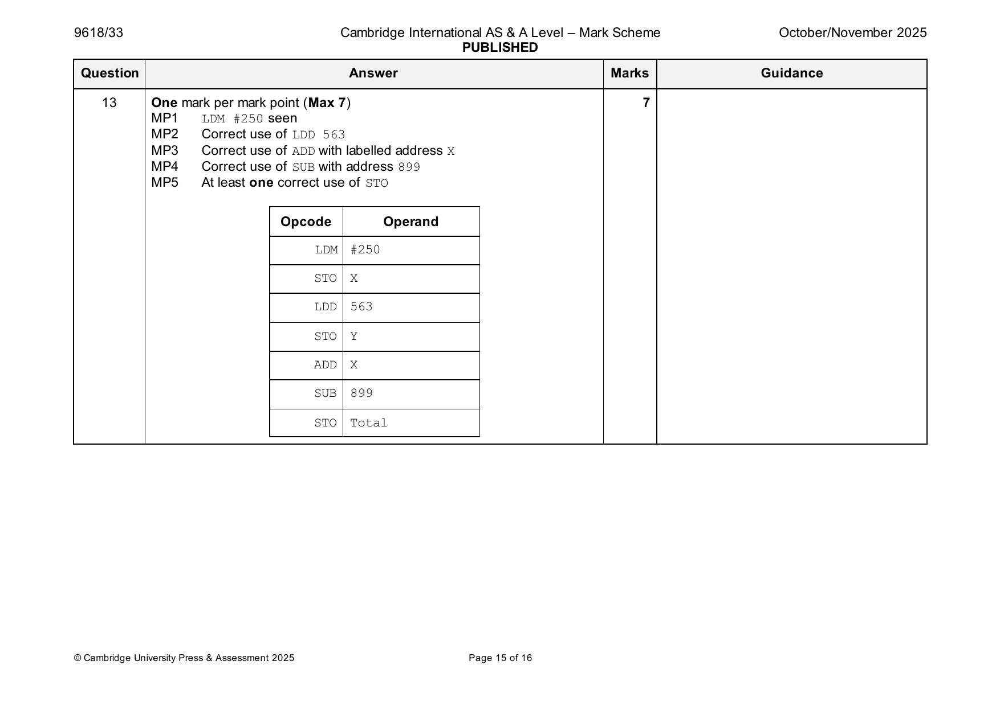
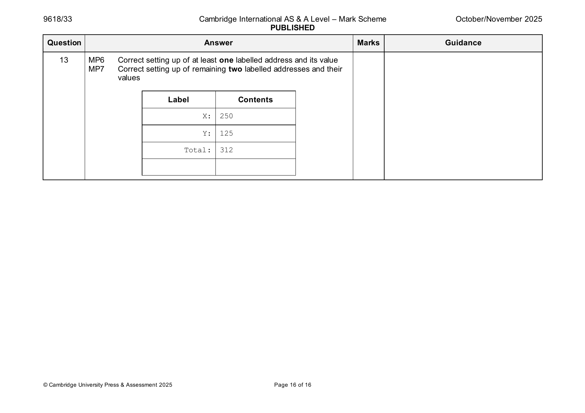
13 One mark per mark point (Max 7) 7
MP1 LDM #250 seen
MP2 Correct use of LDD 563
MP3 Correct use of ADD with labelled address X
MP4 Correct use of SUB with address 899
MP5 At least one correct use of STO
Opcode Operand
LDM #250
STO X
LDD 563
STO Y
ADD X
SUB 899
STO Total
© Cambridge University Press & Assessment 2025 Page 15 of 16
13 MP6 Correct setting up of at least one labelled address and its value
MP7 Correct setting up of remaining two labelled addresses and their
values
Label Contents
X: 250
Y: 125
Total: 312
© Cambridge University Press & Assessment 2025 Page 16 of 16
Official mark scheme pages: 15, 16 · source PDF URL